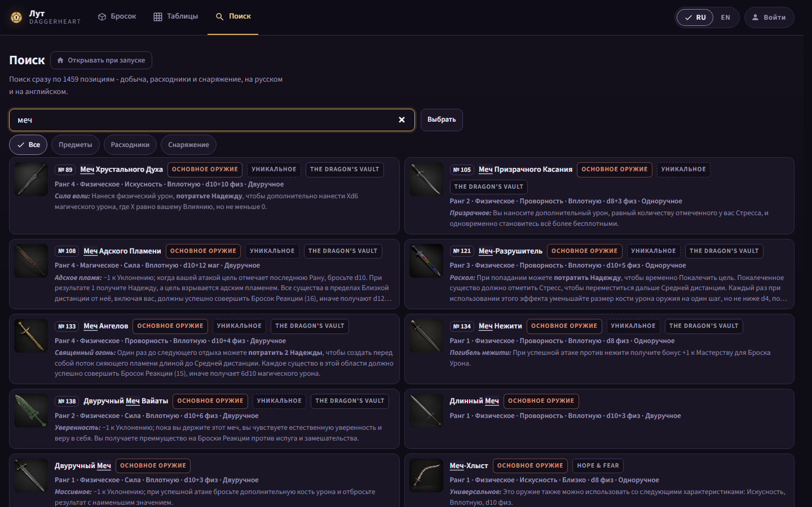

Method: the built dist-test/ of d8e30731, each state opened as
tests/app/states.js case 83 opens it, then the proposed CSS injected
(measure.json holds both readings). Not built code. The Field Measure shots of
eq-weapon-filters__1180 and lists-many__1920 were re-shot with the
corrected rule (a max-width only; a 720 px flex basis wrapped the catalog row and moved
its first row from 244 to 292 px). The panels of mock 9 are not redrawn: mock 9 stands.
| State | Window | Today | Proposed |
|---|---|---|---|
| /search ~ searched RU | 1180x720 | 1 column, 3 rows, 5/32 cut, box 1048 | 2 columns, 4 rows, 3/32 cut, box 720 |
| /search ~ searched RU | 1440x900 | 1 column, 4 rows, 5/32 cut, 54% of a row empty | 2 columns, 8 rows, 2/32 cut |
| /search ~ searched RU | 1920x1080 | 1 column, 6 rows, 5/32 cut, 55% empty | 2 columns, 12 rows, 2/32 cut |
| /tables/eq_weapon RU | 1440x900 | 1 column, 6 rows, 42% empty | 2 columns, 12 rows |
| /tables/eq_weapon ~ two filters RU | 1180x720 | first row 244, 5/20 cut | first row 244, 1/20 cut, gold chips with the check |
| /s/player-token-1 RU | 1920x1080 | 1 column, 7 rows, box 1273 | 2 columns, 10 rows, box 720 |
| /roll/std RU and EN | 1180x720 | stepper 240 of a 282 px column | 282 of 282; first result 267 (unchanged) |
| /lists ~ many lists RU | 1920x1080 | box 1256 | box 720; first card 199 (unchanged) |
Every first-screen top in the table is unchanged by the proposal. Clarity Rule: no control gains
help text. The Impeccable critique of this mock is the orchestrator's (a subagent
cannot run it); the owner is away, so the recommended option is logged in the AFK decisions file.
search: 1180 RU 1180 EN 1440 RU 1440 EN 1920 RU 1920 EN
tables: eq_weapon 1440 1920 two filters 1180 RU EN 360 RU 360 EN
other: /s/ 1920 RU EN /roll/std 1180 RU EN 360 RU EN /lists 1920 RU
